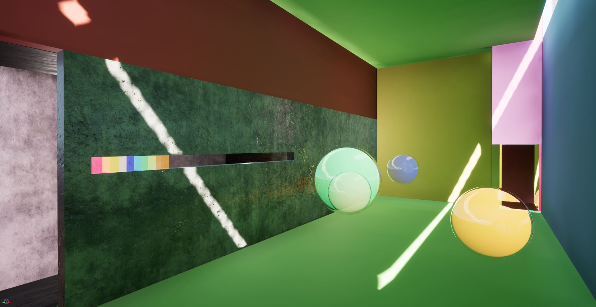
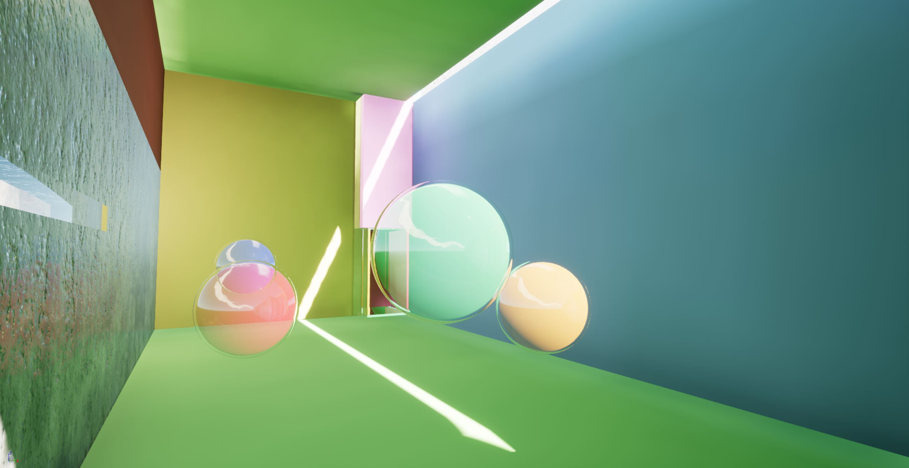
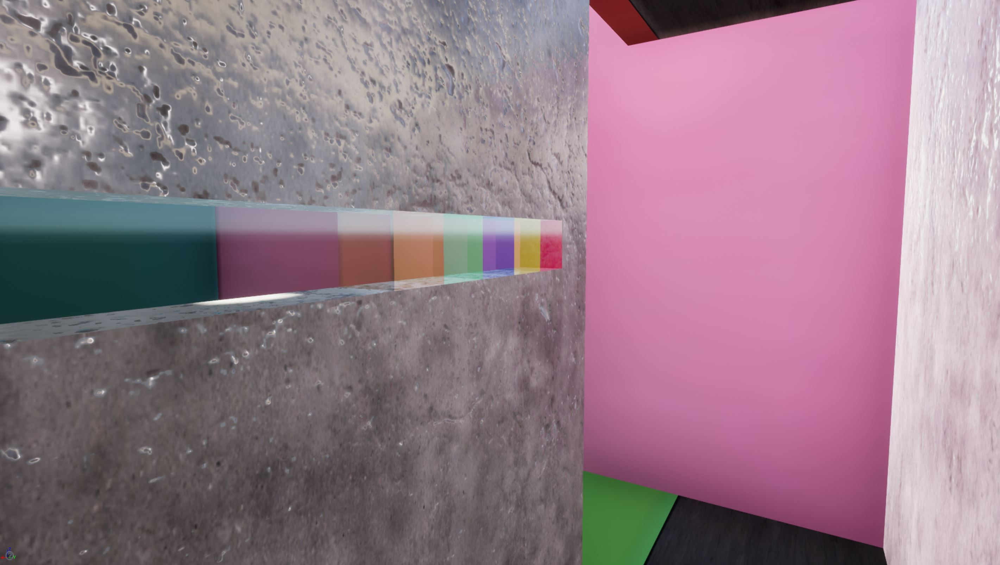
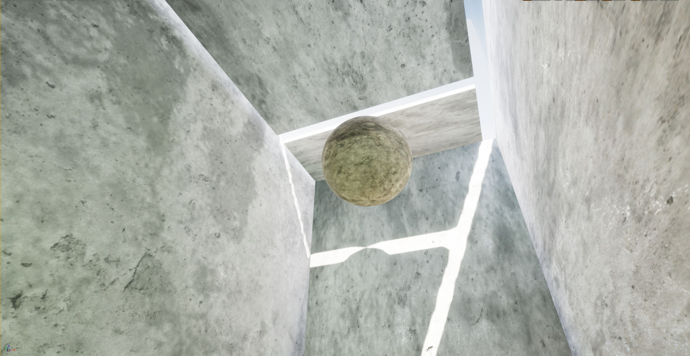
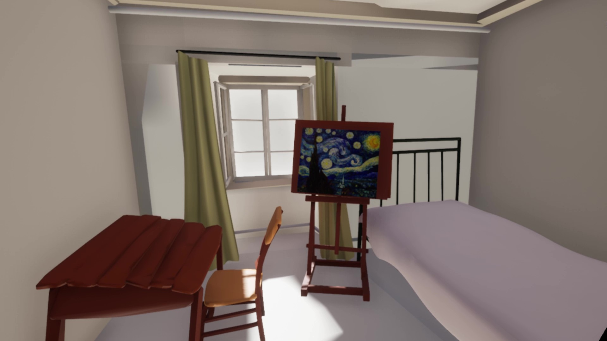
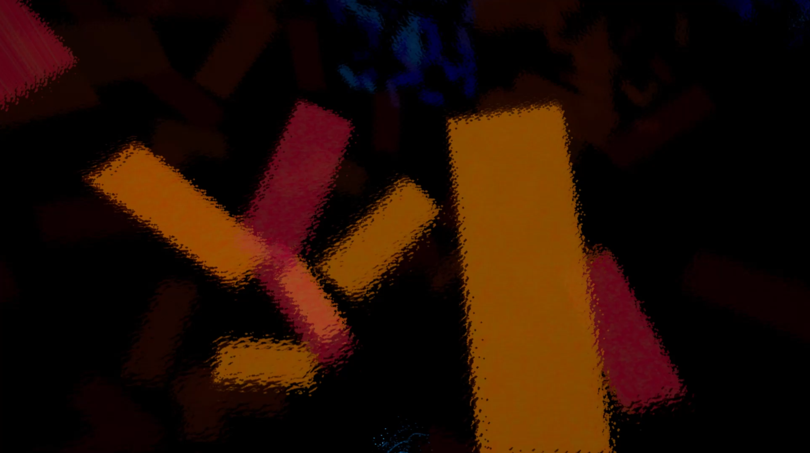
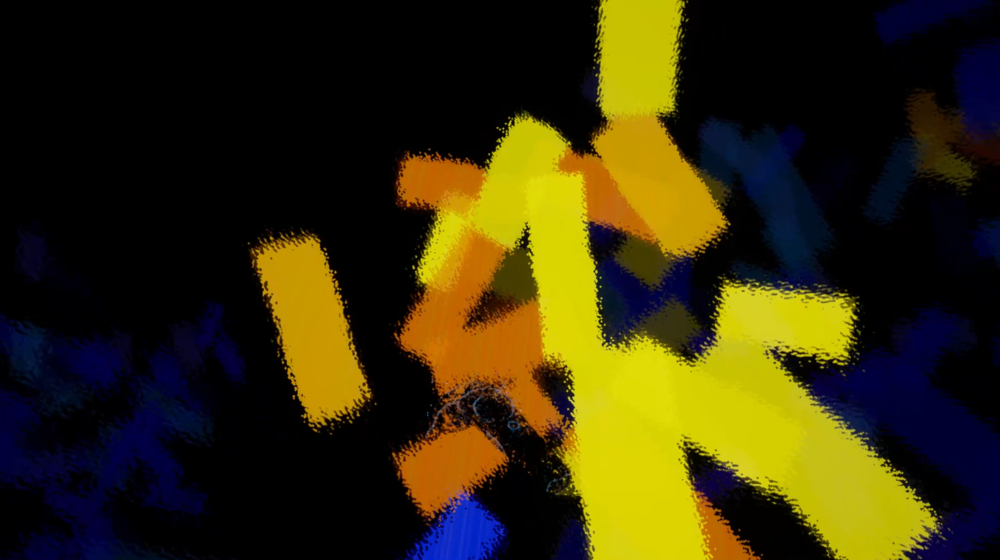

Virtual Reality Spatial Studies
This project explores possibilities when physical laws are absent in the virtual spaces. A series of experiments were conducted with different materialities and scales in a series of “rooms”, such as rooms of various colors and rooms without gravity. Users could thus be affectively and physically immersed in these VR spaces, evoking different responses as they enter a different sphere perceptively, while their own physicality is still situated within our current reality.
Room of Colors
  Room of Weight
Interactive Starry Night
A 3D version of the Starry Night is recreated with Unreal Engine 4. Instead of looking at the painting from a distance, the viewer is now repositioned within the sky as Van Gogh’s brush strokes are transformed into floating blocks. The viewer could thus “fly” through the cloud of blocks with motion controllers and light up the blocks by touching them. This allowed a more immersive and emotion-provoking experience of this masterpiece.
  